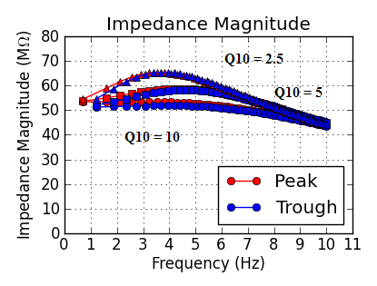

e_pas = -74 (mV)
gbar_h = 2e-5 (S/cm2)
Altomare's model (2001)
Smaller Q10 produces results more similar to physiological data. Magee's data suggested Q10 of Ih is about 5. The parameters of this simulation are based on Altomare's HCN1 model. Since HCN2 is slower than HCN1, a better fit with Q10 = 2.5 might be due to that the native Ih contains both HCN1 and HCN2.

e_pas = -74 (mV)
gbar_h = 2e-5 (S/cm2)
Altomare's model (2001)
Larger Q10 leads to faster time constant.
Ih model in Sonia's paper
e_pas = -70 (mV)
gbar_h = 4e-5 (S/cm2)
The larger the size of injected current, the larger the difference in the impedance magnitude between peaks and troughs.
The larger the size of injected current, the larger the difference in the voltage lag between falling and rising edges.
Ih model in Sonia's paper
gbar_h = 2e-5 (S/cm2), e_pas = -67.5 (mV)
gbar_h = 4e-5 (S/cm2),
e_pas = -70.0 (mV)
gbar_h = 8e-5 (S/cm2),
e_pas = -75.0 (mV)
The differences in impedance magnitude and voltage lag between depolarization and hyperpolarization are larger when gbar_h is close to the median.